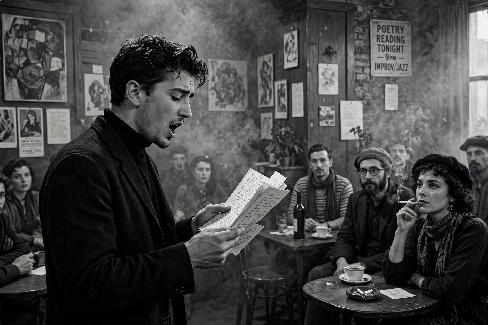

| Author | Allen Ginsberg |
|---|---|
| First performed | 7 October 1955, Six Gallery, San Francisco |
| Published | 1956, in Howl and Other Poems, City Lights Books |
| Publisher | City Lights (Pocket Poets Series No. 4) |
| Dedicated to | Carl Solomon |
"Howl", also known as "Howl for Carl Solomon", is a poem written by Allen Ginsberg in 1954–1955 and published in his 1956 collection Howl and Other Poems. The poem is dedicated to Carl Solomon, whom Ginsberg had met in a psychiatric institution, and is considered to be one of the great works of American literature and the defining work of the Beat Generation.

Ginsberg first read "Howl" at the Six Gallery reading in October 1955.
The poem is divided into three parts plus a "Footnote". Part I, the most famous, is a long breath-unit litany beginning "I saw the best minds of my generation destroyed by madness, starving hysterical naked", cataloguing the lives of Ginsberg's friends and fellow writers. Part II invokes "Moloch", the destructive force of conformity, capitalism and war. Part III addresses Carl Solomon directly, in rocking-horse rhythm. The "Footnote to Howl" is a joyous litany declaring "Holy! Holy! Holy!"
Lawrence Ferlinghetti of City Lights published the poem in San Francisco in 1956. In 1957 customs seized imported copies and Ferlinghetti and bookstore manager Shig Murao were arrested for selling obscene literature. In the ensuing trial, Judge Clayton W. Horn ruled that the poem had "redeeming social importance" and was therefore not obscene — a landmark victory for free expression that brought the poem enormous publicity.
"Howl" remains a central text of the Beat Generation, influencing generations of poets and musicians, and its court case is a landmark in the history of the First Amendment.